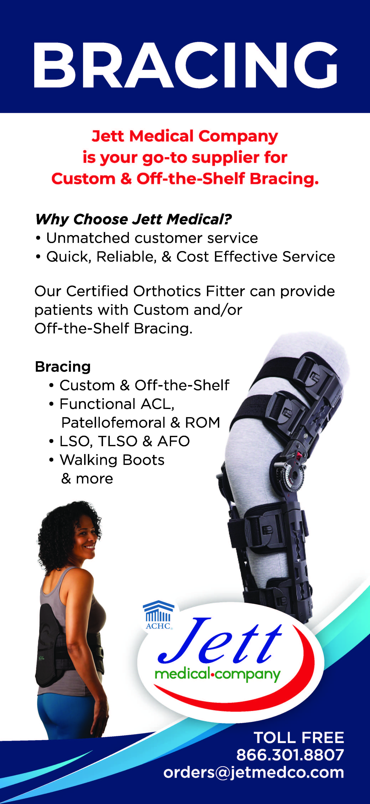

At Jett Medical, we understand the importance of orthopedic bracing in supporting and stabilizing joints and muscles during the recovery process. Our comprehensive range of orthopedic braces is designed to provide comfort, support, and mobility for patients recovering from injuries or surgeries. Whether you need a knee brace, ankle brace, wrist brace, or any other type of orthopedic support, we have the right solution to meet your needs. Our team of experts is dedicated to helping you find the perfect brace that fits your specific condition and promotes optimal healing. With our high-quality orthopedic bracing products, you can regain your strength and confidence while on the path to recovery.
Orthopedic Bracing Services
- Aspen Braces
- DJO Braces
- Post-op Braces
- Custom ACL Braces
- Carbon Fiber AFO
- Hinge Knee Braces
- Wrist Splint
- Wrist Splint with Thumb Spica
- Shoulder Slings
- Ankle Braces
